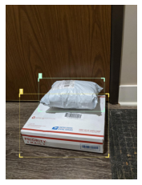

advanced transform pipeline Copy3
- Input two sets of bboxes
- transform image in 3 different version (2 transforms, 1 original)
- new show method for component
Notes
- You can't have class_map without labels
%load_ext autoreload
%autoreload 2
from icevision.all import *
import pandas as pd
Apply two (or more) different transforms to the same record
data_dir = Path("/home/lgvaz/.icevision/data/packages")
train_annotations = pd.read_csv(data_dir/'train/_annotations.csv', names=['filepath', 'xmin', 'ymin', 'xmax', 'ymax', 'label'])
train_annotations.head()
| filepath | xmin | ymin | xmax | ymax | label | |
|---|---|---|---|---|---|---|
| 0 | IMG_6817_jpg.rf.126874422a2e4c8d3b78bbeddea58455.jpg | 805 | 1414 | 952 | 1581 | package |
| 1 | PXL_20201107_021345301_jpg.rf.49c1020270447ebd4b67f71b225db8f4.jpg | 225 | 504 | 675 | 732 | package |
| 2 | PXL_20201107_021345301_jpg.rf.49c1020270447ebd4b67f71b225db8f4.jpg | 95 | 611 | 705 | 1046 | package |
| 3 | PXL_20201103_181911592_jpg.rf.15aa7523328c6968f45326bd7380073b.jpg | 637 | 391 | 850 | 573 | package |
| 4 | PXL_20201103_181911592_jpg.rf.15aa7523328c6968f45326bd7380073b.jpg | 512 | 393 | 681 | 551 | package |
for item in train_annotations.itertuples():
item
item.filepath
'package_2_jpg.rf.00c884b498a2d19ef187c7a0905e786d.jpg'
Regular approach
# TODO: Disscuss about namespace
class PackageParser(parsers.Parser, parsers.ClassMapMixin, parsers.FilepathMixin, parsers.BBoxesMixin, parsers.LabelsMixin):
def __init__(self, annotations_filepath):
super().__init__()
self.images_dir = annotations_filepath.parent
self.annotations_df = pd.read_csv(annotations_filepath, names=['filepath', 'xmin', 'ymin', 'xmax', 'ymax', 'label'])
self._class_map = ClassMap(['package'])
self._class_map.lock()
def __iter__(self) -> Any:
yield from self.annotations_df.itertuples()
def class_map(self, o) -> ClassMap:
return self._class_map
def imageid(self, o) -> Hashable:
return o.filepath
def image_width_height(self, o) -> Tuple[int, int]:
return get_image_size(self.filepath(o))
def filepath(self, o) -> Union[str, Path]:
return self.images_dir / o.filepath
def labels(self, o) -> List[Hashable]:
return [o.label]
def bboxes(self, o) -> List[BBox]:
return [BBox.from_xyxy(o.xmin, o.ymin, o.xmax, o.ymax)]
train_parser = PackageParser(data_dir/'train/_annotations.csv')
valid_parser = PackageParser(data_dir/'valid/_annotations.csv')
test_parser = PackageParser(data_dir/'test/_annotations.csv')
train_records = train_parser.parse(data_splitter=SingleSplitSplitter())[0]
valid_records = valid_parser.parse(data_splitter=SingleSplitSplitter())[0]
test_records = test_parser.parse(data_splitter=SingleSplitSplitter())[0]
show_record(record=train_records[1])
| | 0/? [00:00<?, ?it/s]
[1m[1mINFO [0m[1m[0m - [1m[34m[1mAutofixing records[0m[1m[34m[0m[1m[0m | [36micevision.parsers.parser[0m:[36mparse[0m:[36m138[0m
| | 0/? [00:00<?, ?it/s]
[1m[1mINFO [0m[1m[0m - [1m[34m[1mAutofixing records[0m[1m[34m[0m[1m[0m | [36micevision.parsers.parser[0m:[36mparse[0m:[36m138[0m
| | 0/? [00:00<?, ?it/s]
[1m[1mINFO [0m[1m[0m - [1m[34m[1mAutofixing records[0m[1m[34m[0m[1m[0m | [36micevision.parsers.parser[0m:[36mparse[0m:[36m138[0m

PackageParser.generate_template()
Customize
ClassificationLabelComponent = component_registry.new_component_registry("classification_label")
@ClassificationLabelComponent
class ClassificationLabelsRecordComponent(RecordComponent):
def __init__(self, composite):
super().__init__(composite=composite)
self.classification_labels: List[int] = []
self.class_map = None
def set_classification_class_map(self, class_map: ClassMap):
self.class_map = class_map
def set_classification_labels(self, labels: Sequence[int]):
self.classification_labels = list(labels)
def add_classification_labels(self, labels: Sequence[int]):
self.classification_labels.extend(labels)
def is_valid(self) -> List[bool]:
return [True for _ in self.classification_labels]
def _num_annotations(self) -> Dict[str, int]:
return {"classification_labels": len(self.classification_labels)}
def _autofix(self) -> Dict[str, bool]:
return {"classification_labels": [True] * len(self.classification_labels)}
def _remove_annotation(self, i):
self.classification_labels.pop(i)
def _aggregate_objects(self) -> Dict[str, List[dict]]:
return {"classification_labels": self.classification_labels}
def _repr(self) -> List[str]:
return [f"classification_labels: {self.classification_labels}"]
def as_dict(self) -> dict:
return {"classification_labels": self.classification_labels}
@ClassificationLabelComponent
class ClassificationLabelsMixin(parsers.ParserMixin):
"""Adds `bboxes` method to parser"""
def parse_fields(self, o, record):
# super first because class_map need to be set before
super().parse_fields(o, record)
class_map = self.classification_class_map(o)
names = self.classification_labels(o)
ids = [class_map.get_by_name(name) for name in names]
record.set_classification_class_map(class_map)
record.add_classification_labels(ids)
@abstractmethod
def classification_labels(self, o) -> List[Hashable]:
pass
@abstractmethod
def classification_class_map(self, o) -> ClassMap:
pass
@classmethod
def _templates(cls) -> List[str]:
templates = super()._templates()
return templates + ["def classification_labels(self, o) -> List[Hashable]:"]
class PackageParser(parsers.Parser, ClassificationLabelsMixin, parsers.ClassMapMixin, parsers.FilepathMixin, parsers.BBoxesMixin, parsers.LabelsMixin):
def __init__(self, annotations_filepath):
super().__init__()
self.images_dir = annotations_filepath.parent
self.annotations_df = pd.read_csv(annotations_filepath, names=['filepath', 'xmin', 'ymin', 'xmax', 'ymax', 'label'])
self._instances_class_map = ClassMap(['package'])
self._instances_class_map.lock()
self._classification_class_map = ClassMap(['scene'])
def __iter__(self) -> Any:
yield from self.annotations_df.itertuples()
def class_map(self, o) -> ClassMap:
return self._instances_class_map
def classification_class_map(self, o) -> ClassMap:
return self._classification_class_map
def classification_labels(self, o) -> List[Hashable]:
return ['scene']
def classification_class_map(self, o) -> ClassMap:
return self._classification_class_map
def imageid(self, o) -> Hashable:
return o.filepath
def image_width_height(self, o) -> Tuple[int, int]:
return get_image_size(self.filepath(o))
def filepath(self, o) -> Union[str, Path]:
return self.images_dir / o.filepath
def labels(self, o) -> List[Hashable]:
return [o.label]
def bboxes(self, o) -> List[BBox]:
return [BBox.from_xyxy(o.xmin, o.ymin, o.xmax, o.ymax)]
train_parser = PackageParser(data_dir/'train/_annotations.csv')
train_parser.labels(item)
%debug
['package']
> [0;32m/home/lgvaz/git/icevision/icevision/parsers/mixins/parser_mixins.py[0m(127)[0;36m<listcomp>[0;34m()[0m
[0;32m 125 [0;31m[0;34m[0m[0m
[0m[0;32m 126 [0;31m [0mnames[0m [0;34m=[0m [0mself[0m[0;34m.[0m[0mlabels[0m[0;34m([0m[0mo[0m[0;34m)[0m[0;34m[0m[0;34m[0m[0m
[0m[0;32m--> 127 [0;31m [0mids[0m [0;34m=[0m [0;34m[[0m[0mrecord[0m[0;34m.[0m[0mclass_map[0m[0;34m.[0m[0mget_by_name[0m[0;34m([0m[0mname[0m[0;34m)[0m [0;32mfor[0m [0mname[0m [0;32min[0m [0mnames[0m[0;34m][0m[0;34m[0m[0;34m[0m[0m
[0m[0;32m 128 [0;31m [0mrecord[0m[0;34m.[0m[0madd_labels[0m[0;34m([0m[0mids[0m[0;34m)[0m[0;34m[0m[0;34m[0m[0m
[0m[0;32m 129 [0;31m[0;34m[0m[0m
[0m
ipdb> names
*** NameError: name 'names' is not defined
ipdb> print(names)
*** NameError: name 'names' is not defined
ipdb> ll
[1;32m 122 [0m [0;32mdef[0m [0mparse_fields[0m[0;34m([0m[0mself[0m[0;34m,[0m [0mo[0m[0;34m,[0m [0mrecord[0m[0;34m)[0m[0;34m:[0m[0;34m[0m[0;34m[0m[0m
[1;32m 123 [0m [0;31m# super first because class_map need to be set before[0m[0;34m[0m[0;34m[0m[0;34m[0m[0m
[1;32m 124 [0m [0msuper[0m[0;34m([0m[0;34m)[0m[0;34m.[0m[0mparse_fields[0m[0;34m([0m[0mo[0m[0;34m,[0m [0mrecord[0m[0;34m)[0m[0;34m[0m[0;34m[0m[0m
[1;32m 125 [0m[0;34m[0m[0m
[1;32m 126 [0m [0mnames[0m [0;34m=[0m [0mself[0m[0;34m.[0m[0mlabels[0m[0;34m([0m[0mo[0m[0;34m)[0m[0;34m[0m[0;34m[0m[0m
[0;32m--> 127 [0;31m [0mids[0m [0;34m=[0m [0;34m[[0m[0mrecord[0m[0;34m.[0m[0mclass_map[0m[0;34m.[0m[0mget_by_name[0m[0;34m([0m[0mname[0m[0;34m)[0m [0;32mfor[0m [0mname[0m [0;32min[0m [0mnames[0m[0;34m][0m[0;34m[0m[0;34m[0m[0m
[0m[1;32m 128 [0m [0mrecord[0m[0;34m.[0m[0madd_labels[0m[0;34m([0m[0mids[0m[0;34m)[0m[0;34m[0m[0;34m[0m[0m
[1;32m 129 [0m[0;34m[0m[0m
train_records = train_parser.parse(data_splitter=SingleSplitSplitter())[0]
ipdb> u
> [0;32m/home/lgvaz/git/icevision/icevision/parsers/mixins/parser_mixins.py[0m(127)[0;36mparse_fields[0;34m()[0m
[0;32m 125 [0;31m[0;34m[0m[0m
[0m[0;32m 126 [0;31m [0mnames[0m [0;34m=[0m [0mself[0m[0;34m.[0m[0mlabels[0m[0;34m([0m[0mo[0m[0;34m)[0m[0;34m[0m[0;34m[0m[0m
[0m[0;32m--> 127 [0;31m [0mids[0m [0;34m=[0m [0;34m[[0m[0mrecord[0m[0;34m.[0m[0mclass_map[0m[0;34m.[0m[0mget_by_name[0m[0;34m([0m[0mname[0m[0;34m)[0m [0;32mfor[0m [0mname[0m [0;32min[0m [0mnames[0m[0;34m][0m[0;34m[0m[0;34m[0m[0m
[0m[0;32m 128 [0;31m [0mrecord[0m[0;34m.[0m[0madd_labels[0m[0;34m([0m[0mids[0m[0;34m)[0m[0;34m[0m[0;34m[0m[0m
[0m[0;32m 129 [0;31m[0;34m[0m[0m
[0m
ipdb> names
['package']
ipdb> record.class_map
| | 0/? [00:00<?, ?it/s]
---------------------------------------------------------------------------
AttributeError Traceback (most recent call last)
<ipython-input-30-b02abfbd0839> in <module>
----> 1 train_records = train_parser.parse(data_splitter=SingleSplitSplitter())[0]
record.components
record = train_records[0]
record.classification_labels
~/git/icevision/icevision/parsers/parser.py in parse(self, data_splitter, autofix, show_pbar, cache_filepath)
131 else:
132 data_splitter = data_splitter or RandomSplitter([0.8, 0.2])
--> 133 records = self.parse_dicted(show_pbar=show_pbar)
134
135 splits = data_splitter(idmap=self.idmap)
~/git/icevision/icevision/parsers/parser.py in parse_dicted(self, show_pbar)
81 record = Record()
82
---> 83 self.parse_fields(sample, record)
84
85 # HACK: fix imageid (needs to be transformed with idmap)
<ipython-input-17-c0fbeca39836> in parse_fields(self, o, record)
5 def parse_fields(self, o, record):
6 # super first because class_map need to be set before
----> 7 super().parse_fields(o, record)
8
9 class_map = self.classification_class_map(o)
~/git/icevision/icevision/parsers/mixins/parser_mixins.py in parse_fields(self, o, record)
36 def parse_fields(self, o, record):
37 record.set_class_map(self.class_map(o))
---> 38 super().parse_fields(o, record)
39
40 @abstractmethod
~/git/icevision/icevision/parsers/mixins/parser_mixins.py in parse_fields(self, o, record)
53 def parse_fields(self, o, record):
54 record.set_imageid(self.imageid(o))
---> 55 super().parse_fields(o, record)
56
57 @abstractmethod
~/git/icevision/icevision/parsers/mixins/parser_mixins.py in parse_fields(self, o, record)
95 # TODO: deprecate width/height and use ImgSize
96 record.set_img_size(ImgSize(width=width, height=height), original=True)
---> 97 super().parse_fields(o, record)
98
99 @abstractmethod
~/git/icevision/icevision/parsers/mixins/parser_mixins.py in parse_fields(self, o, record)
75
76 record.set_filepath(filepath)
---> 77 super().parse_fields(o, record)
78
79 @abstractmethod
~/git/icevision/icevision/parsers/mixins/parser_mixins.py in parse_fields(self, o, record)
148 def parse_fields(self, o, record):
149 record.add_bboxes(self.bboxes(o))
--> 150 super().parse_fields(o, record)
151
152 @abstractmethod
~/git/icevision/icevision/parsers/mixins/parser_mixins.py in parse_fields(self, o, record)
125
126 names = self.labels(o)
--> 127 ids = [record.class_map.get_by_name(name) for name in names]
128 record.add_labels(ids)
129
~/git/icevision/icevision/parsers/mixins/parser_mixins.py in <listcomp>(.0)
125
126 names = self.labels(o)
--> 127 ids = [record.class_map.get_by_name(name) for name in names]
128 record.add_labels(ids)
129
AttributeError: 'NoneType' object has no attribute 'get_by_name'
[<icevision.core.record_components.BBoxesRecordComponent at 0x7fe24cd9be10>,
<icevision.core.record_components.LabelsRecordComponent at 0x7fe24cd9b450>,
<icevision.core.record_components.ImageidRecordComponent at 0x7fe24cd9ba90>,
<icevision.core.record_components.ClassMapRecordComponent at 0x7fe24cd9b9d0>,
<icevision.core.record_components.SizeRecordComponent at 0x7fe24cd9b950>,
<icevision.core.record_components.FilepathRecordComponent at 0x7fe24cd9b5d0>]
---------------------------------------------------------------------------
AttributeError Traceback (most recent call last)
<ipython-input-22-a99912b325e7> in <module>
1 record = train_records[0]
----> 2 record.classification_labels
~/git/icevision/icevision/core/components/composite.py in __getattr__(self, name)
33 except AttributeError:
34 pass
---> 35 raise AttributeError(name)
36
37 def reduce_on_components(
AttributeError: classification_labels
Two options: - separate class_maps in their own classes - have unique class that handles multiple class maps
@ClassMapComponent
class ClassMap2Mixin(ParserMixin):
def parse_fields(self, o, record):
record.set_class_map2(self.class_map2)
super().parse_fields(o, record)
@ClassMapComponent
class ClassMapRecordComponent(RecordComponent):
def set_class_map(self, class_map: ClassMap):
self.class_map = class_map
def as_dict(self) -> dict:
return {"class_map": self.class_map}
class LabelsMixin(ParserMixin):
"""Adds `labels` method to parser"""
def parse_fields(self, o, record):
# super first because class_map need to be set before
super().parse_fields(o, record)
names1 = self.labels1(o)
names2 = self.labels2(o)
ids1 = [self.class_map1.get_by_name(name) for name in names1]
ids2 = [self.class_map2.get_by_name(name) for name in names2]
record.set_class_map1(self.class_map1)
record.set_class_map2(self.class_map2)
record.add_labels1(ids1)
record.add_labels2(ids2)
class VocXmlParser(Parser, FilepathMixin, SizeMixin, LabelsMixin, BBoxesMixin):
def __init__(
self,
annotations_dir: Union[str, Path],
images_dir: Union[str, Path],
class_map: Optional[ClassMap] = None,
idmap: Optional[IDMap] = None,
):
super().__init__(class_map=class_map, idmap=idmap)
self.images_dir = Path(images_dir)
self.annotations_dir = Path(annotations_dir)
self.annotation_files = get_files(self.annotations_dir, extensions=[".xml"])
def __len__(self):
return len(self.annotation_files)
def __iter__(self):
yield from self.annotation_files
def prepare(self, o):
tree = ET.parse(str(o))
self._root = tree.getroot()
self._filename = self._root.find("filename").text
self._size = self._root.find("size")
def imageid(self, o) -> Hashable:
return str(Path(self._filename).stem)
def filepath(self, o) -> Union[str, Path]:
return self.images_dir / self._filename
def image_width_height(self, o) -> Tuple[int, int]:
return get_image_size(self.filepath(o))
def labels(self, o) -> List[Hashable]:
labels = []
for object in self._root.iter("object"):
label = object.find("name").text
labels.append(label)
return labels
def labels1(self, o):
# PROBLEM: Labels mixin still present here
return self.labels(o)
def bboxes(self, o) -> List[BBox]:
def to_int(x):
return int(float(x))
bboxes = []
for object in self._root.iter("object"):
xml_bbox = object.find("bndbox")
xmin = to_int(xml_bbox.find("xmin").text)
ymin = to_int(xml_bbox.find("ymin").text)
xmax = to_int(xml_bbox.find("xmax").text)
ymax = to_int(xml_bbox.find("ymax").text)
bbox = BBox.from_xyxy(xmin, ymin, xmax, ymax)
bboxes.append(bbox)
return bboxes
class MultiAdapter(tfms.Transform):
def __init__(self, adapters):
self.adapters = adapters
def setup(self, components):
for adapter in self.adapters:
adapter.setup(components=components)
def apply(self, record):
return [adapter.apply(record=deepcopy(record)) for adapter in self.adapters]
Store a original copy of the image
@ImageArrayComponent
@FilepathComponent
class AlbumentationsOriginalImageComponent(tfms.A.AlbumentationsAdapterComponent):
order = 0.1
def collect(self, record):
record.original_image = record.img.copy()
tfms1 = tfms.A.Adapter([*tfms.A.aug_tfms(size=128, presize=256), tfms.A.Normalize()])
tfms2 = tfms.A.Adapter([*tfms.A.aug_tfms(size=512, presize=1028), tfms.A.Normalize()])
multi_tfms = MultiAdapter([tfms1, tfms2])
ds = Dataset(train_records, multi_tfms)
record1, record2 = ds[0]
record1.img.shape, record2.img.shape
record1.original_image.shape, record2.original_image.shape
model_type = models.ross.efficientdet
model = icedata.fridge.trained_models.tf_efficientdet_lite0().cuda()
data_dir = icedata.fridge.load_data()
parser = icedata.fridge.parser(data_dir)
train_records, valid_records = parser.parse()
train_records[0].original_img_size
infer_tfms = tfms.A.Adapter([*tfms.A.resize_and_pad(384), tfms.A.Normalize()])
infer_ds = Dataset(valid_records, infer_tfms)
preds = model_type.predict(model, infer_ds)
preds[0].labels
((128, 128, 3), (512, 512, 3))
((666, 499, 3), (666, 499, 3))
/home/lgvaz/miniconda3/envs/mmlab/lib/python3.7/site-packages/torch/hub.py:483: UserWarning: Falling back to the old format < 1.6. This support will be deprecated in favor of default zipfile format introduced in 1.6. Please redo torch.save() to save it in the new zipfile format.
warnings.warn('Falling back to the old format < 1.6. This support will be '
0%| | 0/128 [00:00<?, ?it/s]
[1m[1mINFO [0m[1m[0m - [1m[34m[1mAutofixing records[0m[1m[34m[0m[1m[0m | [36micevision.parsers.parser[0m:[36mparse[0m:[36m138[0m
ImgSize(width=499, height=666)
[4]